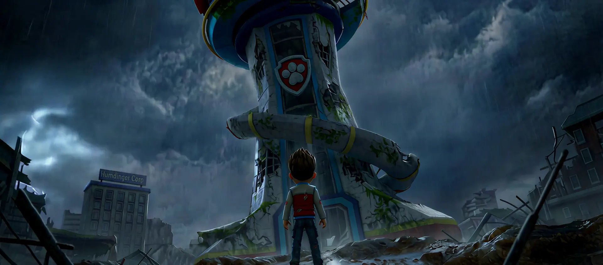
Case study
Shipping a film with tools that didn't exist yet.
I treated a parody trailer like a product: a spec, hard constraints, a vendor bake-off, a production system and a launch funnel. The one thing I couldn't design was the technology, so I designed around it and waited.
- The ideaMarch 2025. No video model could make it.
- The decisionDesign the film as frames, then wait for a model that passes six constraints.
- The result42 shots at a fifth of the price. Under $100, about 30 working days.
None of this is about film. Write the spec before you pick the tool, test every vendor against the same fixed constraints, and put an approval in front of every paid run.
An idea the tools couldn't make.
A cartoon cast that has to stay itself in every shot, filmed like a Hollywood trailer, on a personal budget. Every tool I tried could make something. None could make this.
- On model.A cartoon kid stays a cartoon kid. Not a grown man with stubble.
- The IP.Some platforms block well-known characters outright.
- Two frames.I design both ends of a shot. The model fills the middle.
- No watermark.Anything burned into the frame ends the shot.
- My budget.Self-funded. Every paid run needs my go.
- The bar.A studio trailer, not a viral clip.
If I design every frame myself and treat video models as interchangeable renderers, I can switch models at the cost of one bake-off, and wait for the right one.
The frames are the PRD.
Whoever owns the frames owns the product. The video model only renders it. So before a single shot moved, I designed the film as 64 frames in eight days.
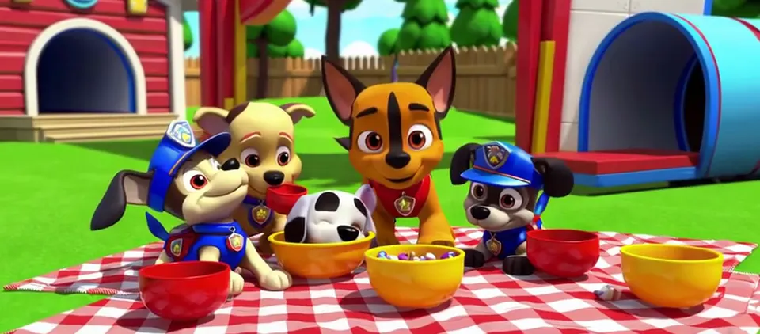
The seed
I tried the idea in Sora, the leading video model of the day. It served a picnic of knock-off pups. Back in the drawer.
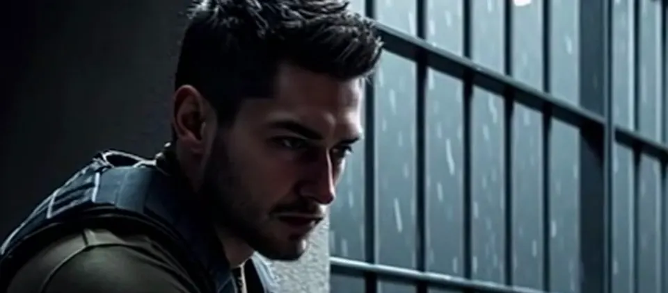
One last Sora try
It got the world right and cast Ryder as a grown man with stubble.
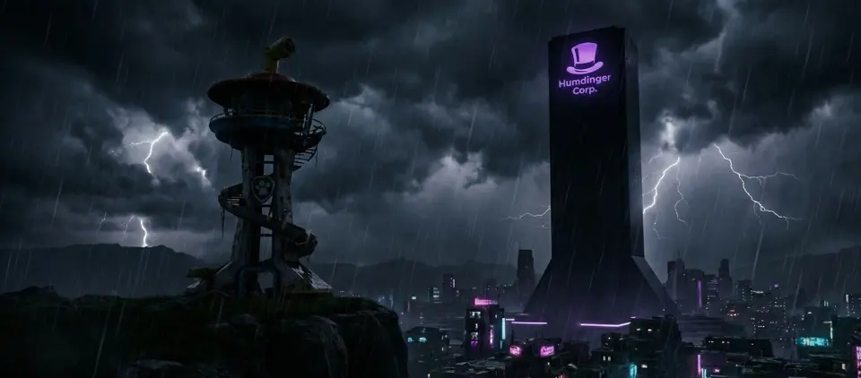
Frame one
Twenty minutes later, in another tool. The world before the hero.
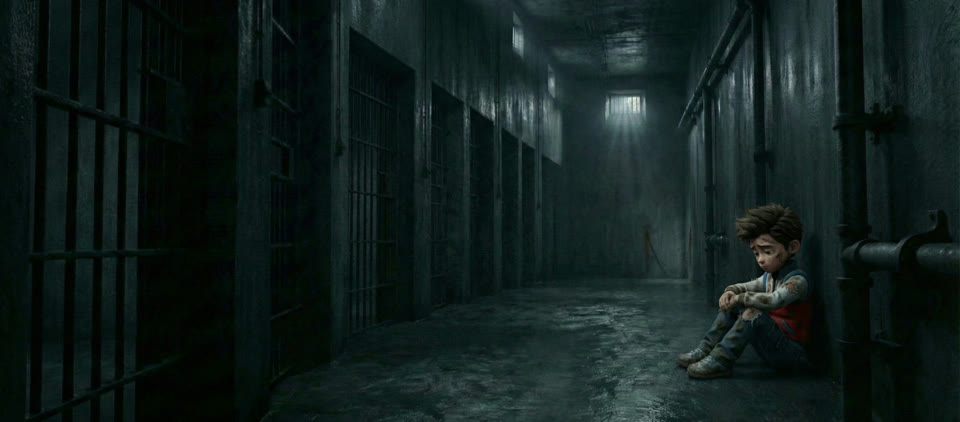
The cell
Act by act, with character sheets so the kid stays the kid.
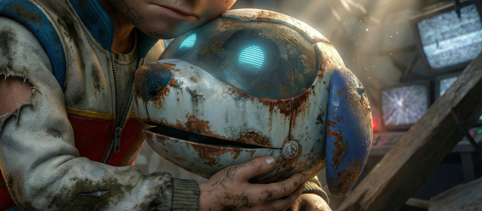
The heart
Later, every model was tested on this frame.
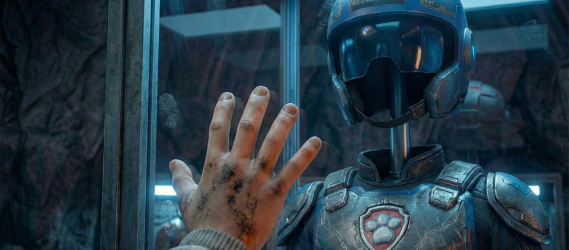
The suit
Some frames were drawn as pairs: where a shot starts, and where it lands.
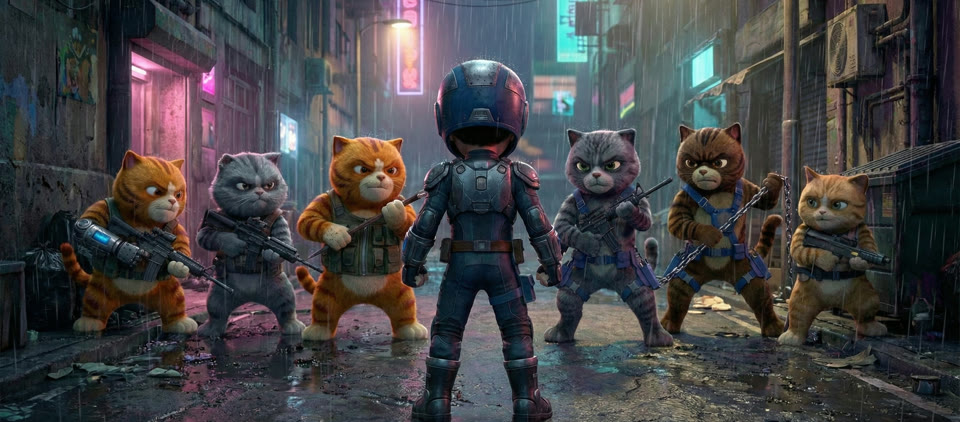
The fight
Sixty-four frames in eight days. The spec was done in January.
Two frames, one move
The PRD in practice: I design the first and last frames, and the model renders the move between them.
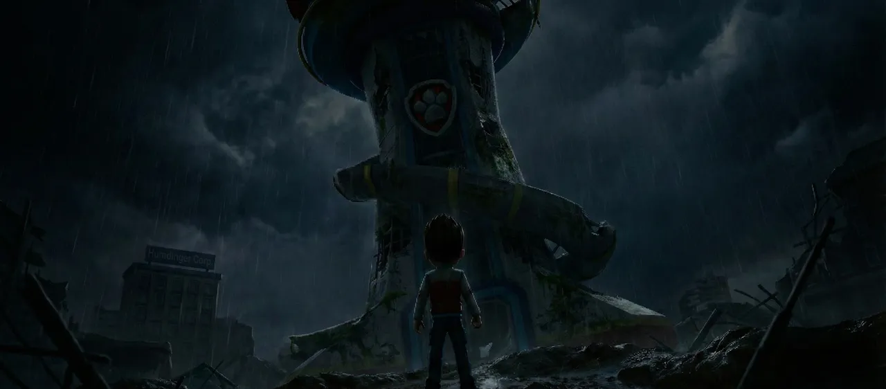
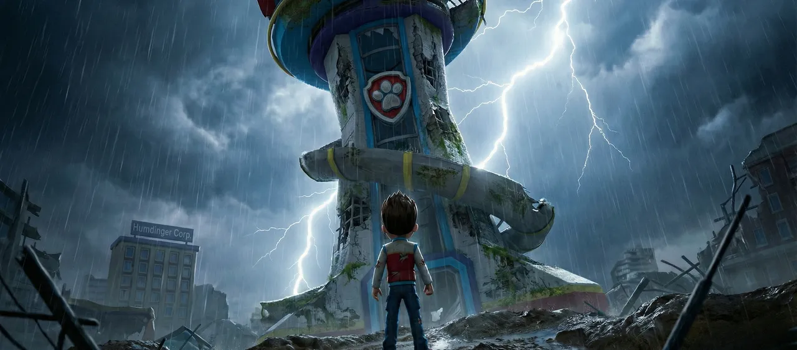
Every tool made something. None made the film.
The frames were ready in January. Then came round after round of tools, each judged against the same six constraints, until one passed in August.
The day it turned.
On August 11 I connected Claude to fal and left Higgsfield, which had blocked the characters. I asked for a video model built for animation. It suggested MiniMax H3 and compared prices, and we tested both on the robo-dog frame.
Seedance cost $3.71 for 8 seconds at 720p and switched off the robot's lit eyes. H3 cost about $0.80 at 768p and kept them. About a fifth of the price, and no worse. At Seedance's price, the same shoot would have cost four to five times as much.
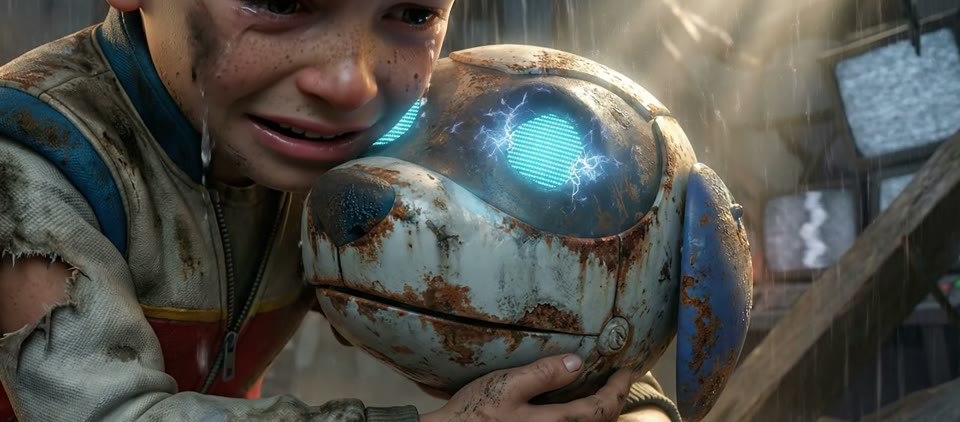
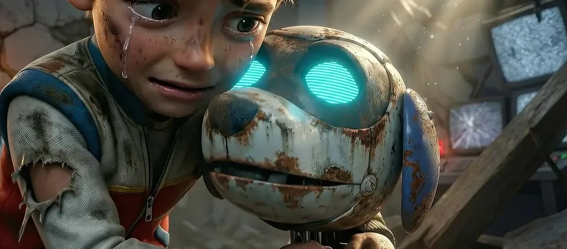
| Model | On model | Emotion, lit eyes | Two frames | Accepts the IP | No watermark | Cost | Verdict |
|---|---|---|---|---|---|---|---|
| SoraMar 2025, Jan 2026 | Knock-off pups, a grown-up Ryder | Subscription | Too early | ||||
| MidjourneyJan 2026 | A few shots held | The robo-dog hug made the film | End frame | Subscription | Kept as plates, and as the bar | ||
| Veo / FlowJan, Jul 2026 | Mostly weak | In frame | Subscription | 30 shots thrown out | |||
| HiggsfieldAug 2026 | Blocked for copyright | Credits | Blocked | ||||
| Seedance 2 / 2.5Aug 2026 | Too human from a cropped frame | The robot's eyes went dark | On fal | $0.47/s720p | Good. ~5× the price | ||
| MiniMax H3Aug to Nov 2026 | Stayed childlike | Eyes stayed lit | On fal | $0.10/s768p · $0.16/s at 2K | Winner. 42 shots | ||
| Kling 4.0Nov 2026 | Start, middle, end | $1.18per 5 s, 1080p | Finishing fixes |
The tools change. The system doesn't.
The system let me swap models mid-project, keep every version, and never pay for a run I hadn't approved.
Me · the decisions
- Write and design every frame
- Approve each move: "go"
- Mark the cut points
- Lock picture and sound
- Positioning and launch
- Spec64 designed framesGemini
- CleanWatermarks out, one aspect, upscaledIOPaint / LaMa · Upscayl
- GenerateTwo frames per shot, chainedMiniMax H3 on fal
- QAFreeze, on-twos, frame sheetsffmpeg · Python
- Library42 approved shots at 2912×1280Versioned, never overwritten
- Edit as codeFrame-exact edit lists, 49 versionsJSON · Python · ffmpeg
- SoundRebuilt from its layers, 28 mixesSuno · ElevenLabs · voice clone
- Master2912×1280, web encodes, captionsffmpeg
- Siteryderrises.com, custom playerGitHub Pages
- MeasureWatch depth, shares, contactsGA4 · Search Console · UTMs
Control layer · Claude Code
- A memory of every rule, with when and why
- Handoffs between sessions
- Gated paid runs
- Measured review: timecodes, frames, loudness
- Two skills distilled from the project
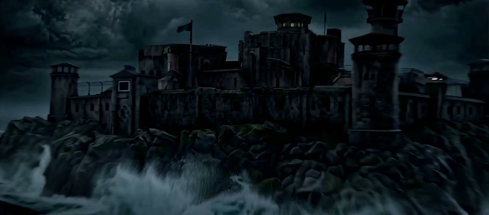
First frame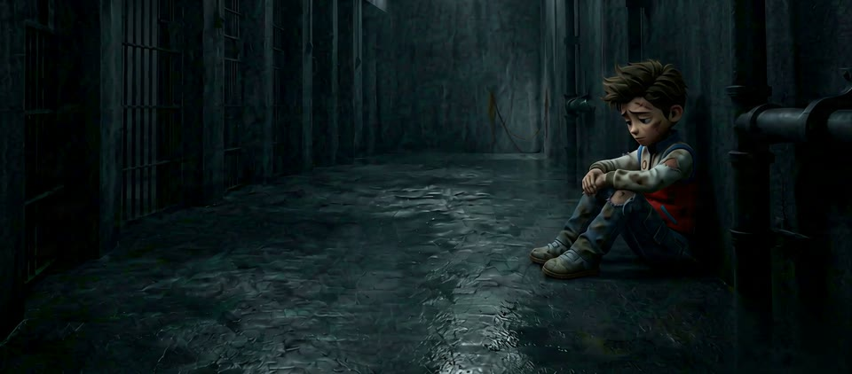
Last of 03b = first of 03c36.7 dB match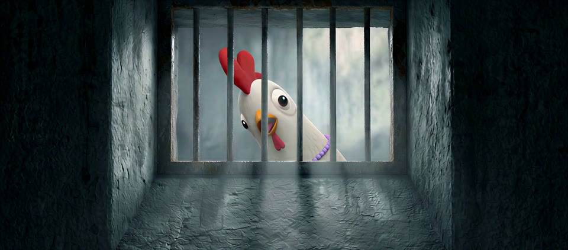
Last of 03c = first of 04b33.7 dB match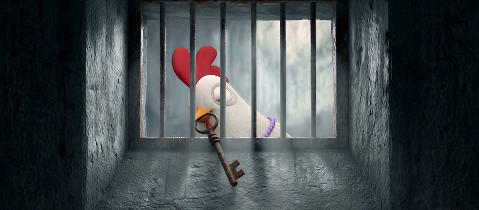
Last frame
Each shot starts on the exact last frame of the one before it, so a cut reads as one continuous move. That's why the film has no dissolves.
One shot, up close.
The studio ident runs four seconds: an empty sky, a bicycle across the moon, an empty sky again. It took three models to get there.
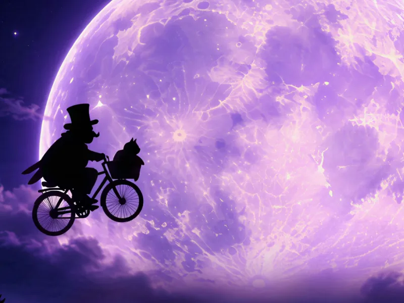
Two frames
TriedMiniMax H3, with a first and a last frame.
ResultTwo frames can't describe a pass. The bicycle is already on the moon in frame one.
ChangedThe shot needs a frame in the middle.
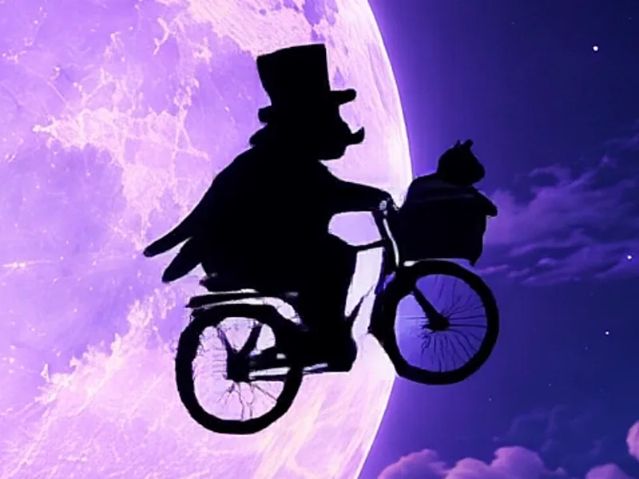
One keyframe
TriedFLUX, with a keyframe at the centre of the moon.
ResultThe entrance worked. The wheels bent on the way out.
ChangedOne keyframe can't hold a shape across the frame.
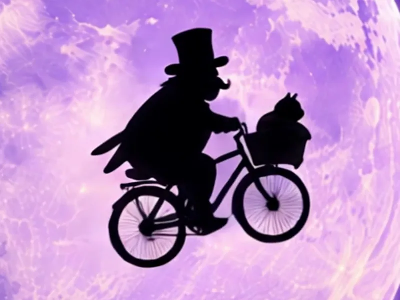
Five frames
TriedKling 4.0: a start, three pins across the moon, an end.
ResultThe silhouette holds from edge to edge.
ChangedThe method is picked per shot, not per film.
In the film
The approved take, as it opens the trailer.
Each rule was earned.
- No dissolves. Ever.A half-second dissolve was thrown out, then a quarter-second one. Cut, chain, or let the storm flash.
- Speeding up is not cutting.A ×4 speed-up read as deleted footage. A shot that needs energy gets a little faster, with every frame kept.
- Chain the frames.The first joins didn't connect. Now the last frame of a shot is the first frame of the next.
- Agree the move, then go.Two expensive runs sent the camera to the wrong floor. No paid run without an approved move.
- No AI tells.Spark frames, stock doodles, off-model faces. Each one was cut or redrawn.
- Music first.Four story-order cuts came out bad. The trailer is cut to the phrases of the score.
Four wrong turns, four fixes.
Each one cost time, and each one changed how the next thing was made.
The linear cut
TriedFour story-order assemblies.
Result"Came out really bad."
ChangedRebuilt as a trailer, music first.
The patched poster
TriedFixing AI renders patch by patch.
ResultMud.
ChangedA clean, layered rebuild.
The first site
TriedA page that felt like a template.
Result5/10. "AI slop."
ChangedRebuilt from the film's own materials.
The re-recorded line
TriedFour voice tools.
ResultNone beat the original.
ChangedKept the original. Knowing when to stop.
- 64frames designed
- ≈100generation runs on H3
- 42shots approved into the library
- 47cuts in the final trailer
- 1:58one trailer
49picture versions
28mixes
31poster versions
0dissolves
A launch built for one audience.
Positioned as an unsanctioned parody, never "made with AI". Aimed at industry people through LinkedIn and an ad targeted at the studio's own staff. Every link is tagged, every step is measured.
Reach
- Launch post on LinkedIn
- Ad to the studio's staff
- Profile, Featured
- Humblin Pictures on YouTube
Measured: a UTM tag per channel
Land
- ryderrises.com
- The film in 1:58, the poster, the story
Measured: sessions by source
Watch
- Trailer opens
- 10, 25, 50, 75, 90%
- Watched to the end
Measured: real watch time
Act
- Make the call (LinkedIn)
- Write an email
- Pass it on
Measured: contacts and shares
Launch day is Tuesday, Dec 1. The results go in here after it, not before.
What it took.
The production numbers are in. The audience numbers come after the launch on Dec 1: views, watch depth, and contacts from the studios I'm aiming at.
Next time.
- Plan the method per shot.Up front, not one rejected version at a time.
- Write the playbook early.The lessons became two reusable skills. I should have written them sooner.
- Never patch AI images.A clean composite beats one more regeneration.
The stack.
For people building with these tools: what each one did, what it cost, and what lost out. Twelve stages, from the first idea test to the live site.
Show the full stack
| Stage | Tool | Why | Cost | What lost out, and why |
|---|---|---|---|---|
| Idea test | Sora | The leading video model in 2025 | Subscription | Too early: off-model, a grown-up Ryder |
| The frames | Gemini (Nano Banana) | One consistent CG look across 64 frames | Subscription | |
| Motion tests | Midjourney video | A few shots good enough to keep | Subscription | Veo: weak, watermarked, 30 shots dropped |
| The shoot | MiniMax H3 on fal | On model, lit eyes, two frames, no IP block | $48.60 for the shoot | Seedance: ~5× the price. Higgsfield: blocked |
| Fixes | Kling 4.0 | Start, middle and end frames | $1.18 per 5 s | FLUX keyframes: bent bike wheels |
| Clean-up | IOPaint / LaMa, Upscayl | Local batch inpaint and upscale | Free | |
| Edit | ffmpeg, Python | Frame-exact, versioned edit lists | Free | A first assembly in Remotion |
| Music | Suno | A cover of the theme, cut to phrases | Pro plan | Lyria, Stable Audio, original songs |
| Sound and voice | ElevenLabs, a voice clone | Effects and the narrator | Subscription | Voice changers and re-record tools |
| The poster | ChatGPT, Gemini, Nano Banana Pro, Photoshop | Composition, 4K tiles, a scripted layered build | ≈$4.80 in tiles | Patch-by-patch fixes |
| Orchestration | Claude Code | Memory, gated runs, measured review, skills | Subscription | |
| Ship | GitHub Pages, GA4, Search Console | A fast site that measures itself | Free |
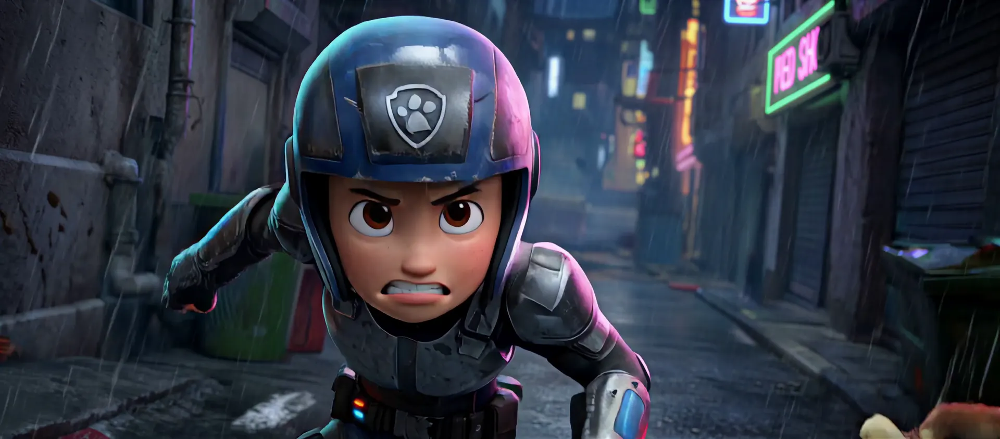
See it move.
The trailer runs 1:58. It plays on the film's site.
Ryder Rises is by Yoni Levy: writer, content creator and designer, a builder and product person who researches AI for media creation. Father of Libi and Nuri, who have seen every episode.